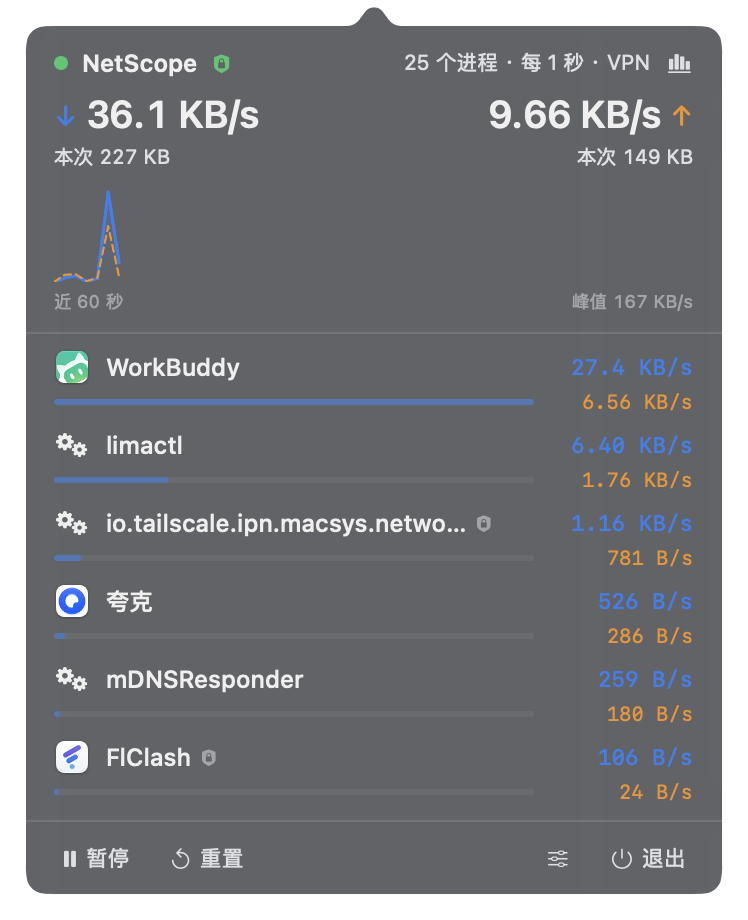
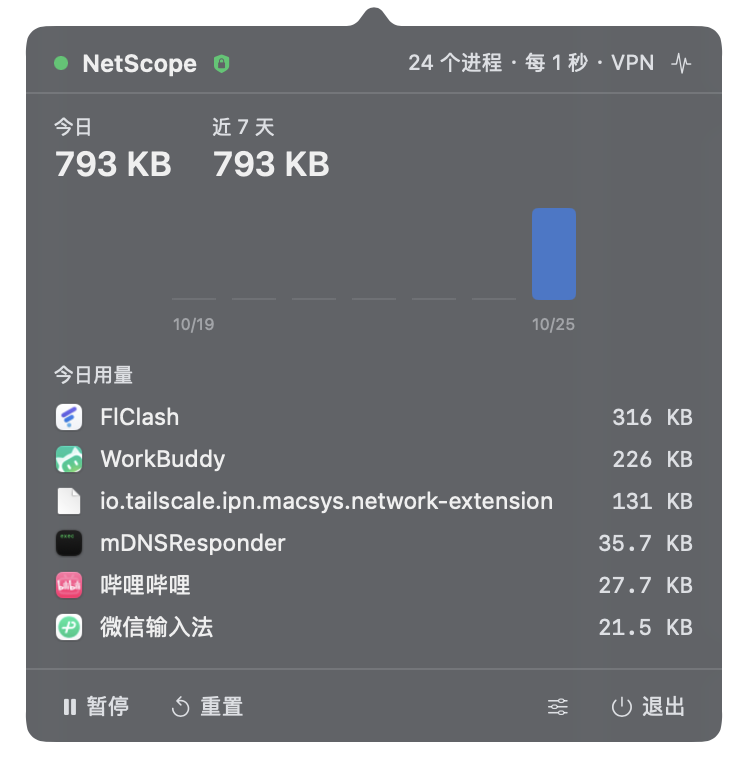
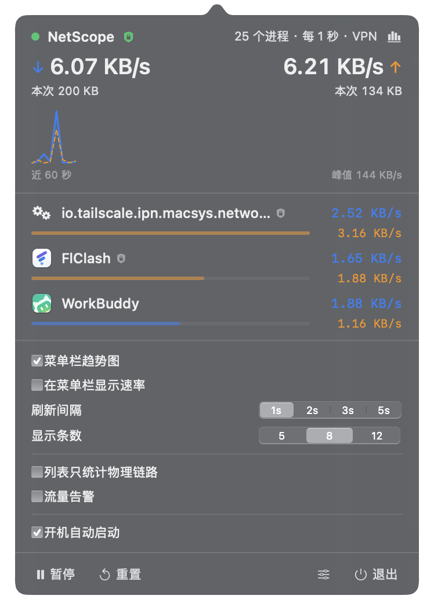

按应用聚合，不是按进程
Chrome 开了二十个 Helper？它们会归并成一条 Google Chrome。
沿 proc_pidpath 向上找最外层 .app，所以 Helper、渲染进程都不会散落成一堆噪音。



Chrome 开了二十个 Helper？它们会归并成一条 Google Chrome。
沿 proc_pidpath 向上找最外层 .app，所以 Helper、渲染进程都不会散落成一堆噪音。
开着 TUN 型 VPN 或虚拟机时，同一份数据会在虚拟接口和物理接口各计一次。
实测差 2.2 倍（23,575 B/s vs 10,758 B/s）。这里跑两条采样通道：列表看全接口，总量只看 en*。
按天聚合，写入节流 30 秒。能翻今日用量、近 7 天趋势、今天消耗最多的应用 —— 关掉应用也不会归零。
连续 3 次采样都超阈值才发通知，同应用 10 分钟冷却，掉到阈值以下立即清零。 下载刚开始那一秒的峰值不会打扰你。
数据来自系统自带的 /usr/bin/nettop，不需要 root、不需要内核扩展或网络扩展，
也不需要辅助功能、屏幕录制、完全磁盘访问权限。
主进程 CPU 0.06%、内存 32 MB；两个 nettop 子进程各 0.1%、6 MB。 每秒采样一次，界面只在菜单栏里安静待着。
把 nettop 接到伪终端上实时读：
nettop -P -x -L 0 -s 1 -J bytes_in,bytes_out -t external-L N 的采样窗口固定 30 秒，与 N 无关 —— 没法用它做秒级采样。-L 0 接管道时 stdout 是全缓冲，实测数秒延迟且进程被杀会丢数据；接到 pty 后变成行缓冲。这些都是在真机上量出来的结论，不是猜的。同样的结论也决定了退出时为什么要先 SIGTERM 再补一刀
SIGKILL：nettop 在 pty 下会忽略 TERM，而 kill(2) 照样返回 0。
NetScope-1.1.2-arm64.dmgxattr -dr com.apple.quarantine /Applications/NetScope.app出于安全考虑，包是临时签名（codesign --sign -）。自己用没问题；要分发给别人请自行签名与公证。
git clone https://github.com/zdx8/NetScope-macOS.git
cd NetScope-macOS
bash Scripts/build_app.sh首次构建约 24 秒，增量 6–7 秒。产物在 dist/NetScope.app。
127.0.0.1 上的通信不显示。utun* 上有 IPv4 地址（macOS 会给每个 utun 都发 fe80::，用 IPv4 才能干净区分）。